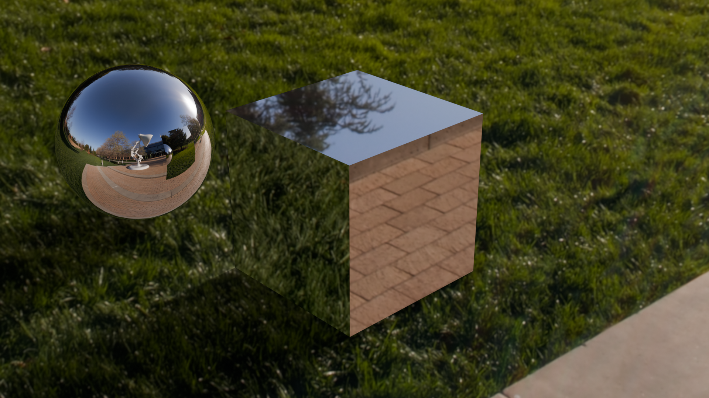
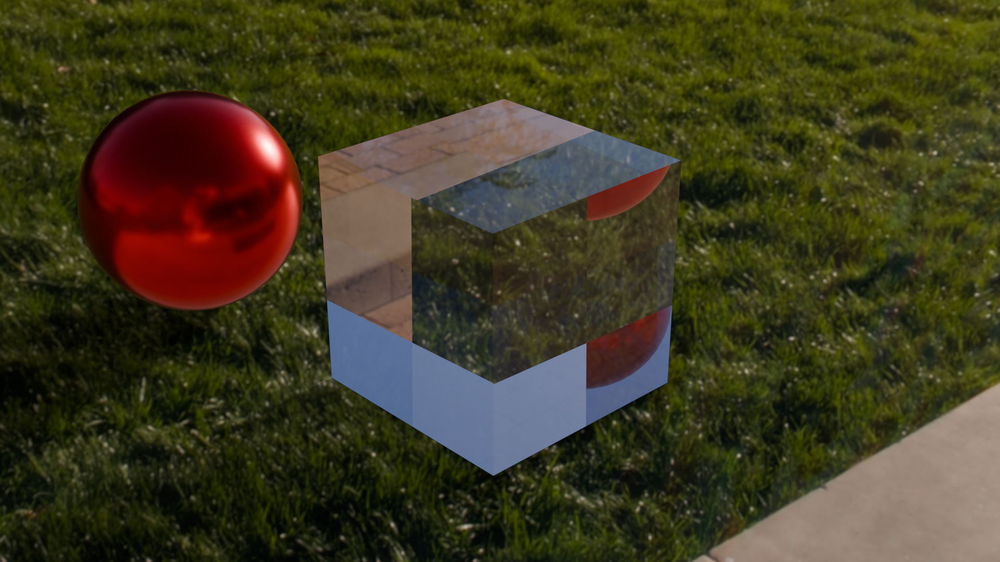
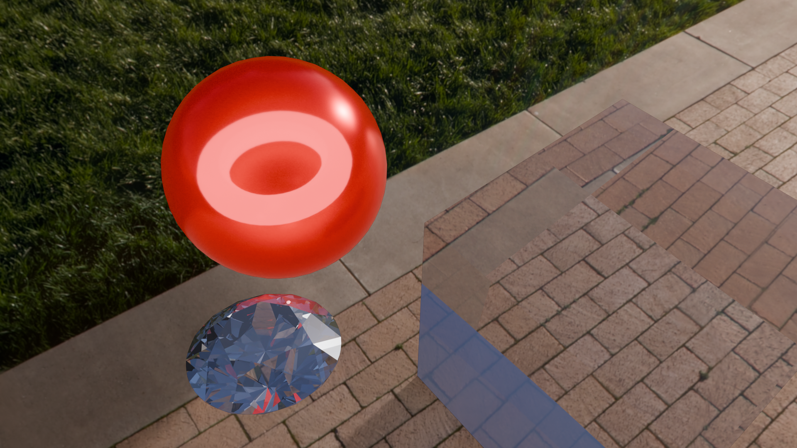

Production Rendering
Mirror ball and cube in photographed environment

Glossy reflective red ball and glass cube in photographed environment

Custom scene (diamond)
I loaded in a diamond shaped mesh and added an emissive torus inside the glass ball as a sort of light bulb.
I increased the transmission of the glass ball to 20% to let some light shine out to give interesting shine on the diamond.
The diamond has a physically realistic index of refraction of 2.4
